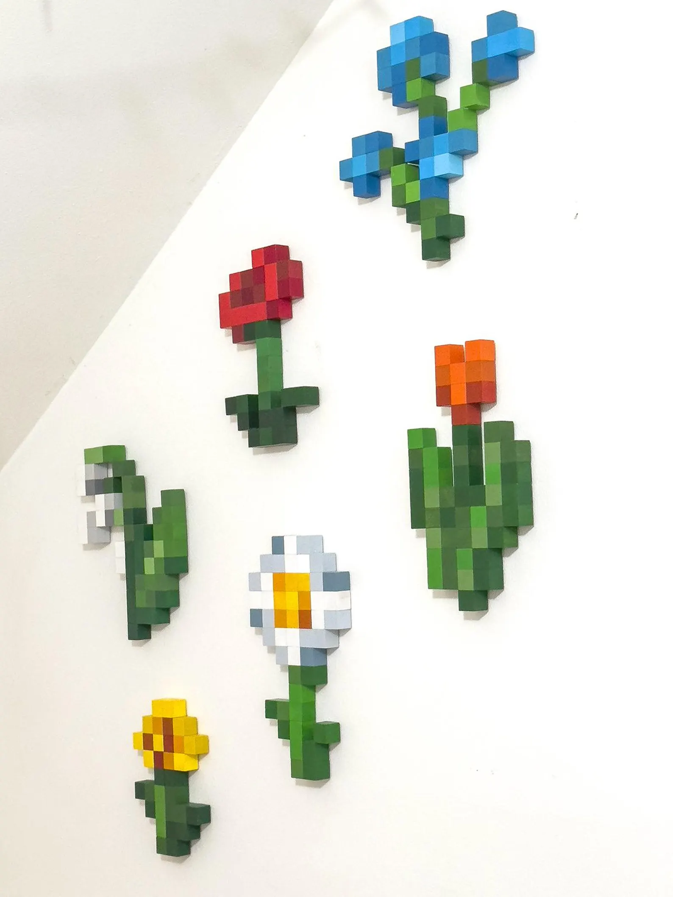

Hand-Painted Pixel Flowers (PNG Format)

About This Image
This image features a wall of hand-painted wooden flowers, each crafted with a pixelated aesthetic. While I originally wanted to use a personal photo of my own Minecraft botanical collection, technical issues with that file led me to this beautiful set of physical pixel art that perfectly mirrors the digital "Botanical Legends" theme.
Why PNG Format?
I chose the PNG format for these painted flowers because the artwork relies on sharp, defined edges between the "pixels" and the white background. Since PNG is a lossless format, it prevents the colors from bleeding together during compression, ensuring the handcrafted details and vibrant tones remain crisp and clear.
Image source: BirdiesNestArt on Etsy